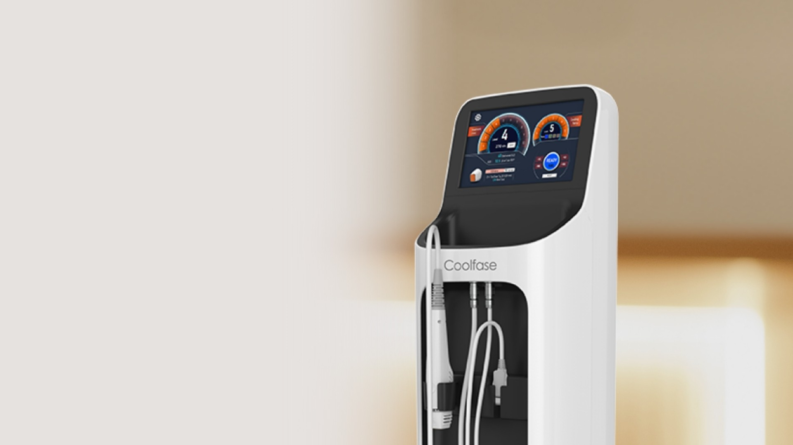
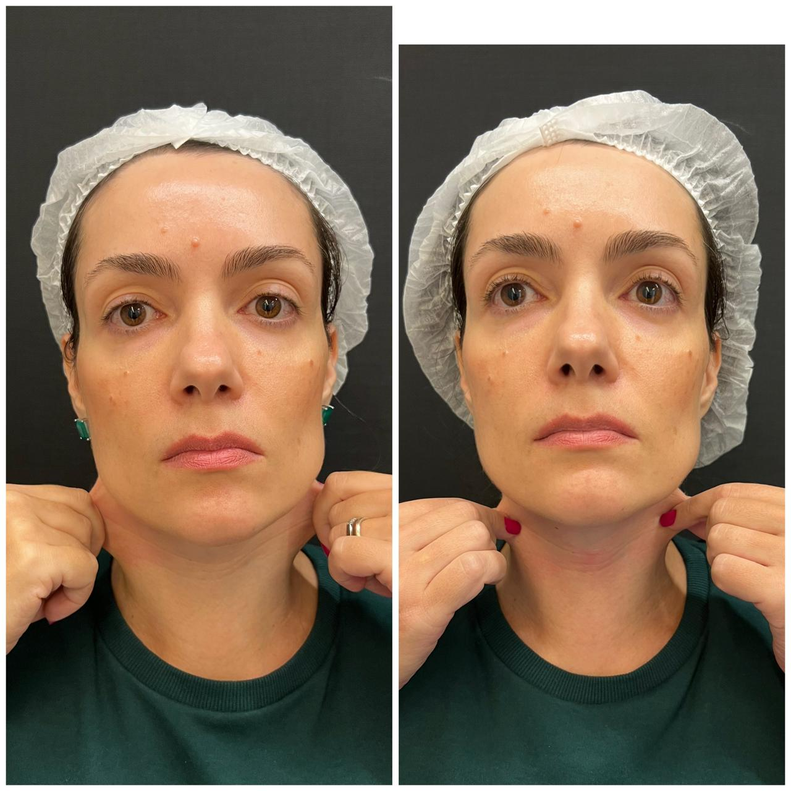
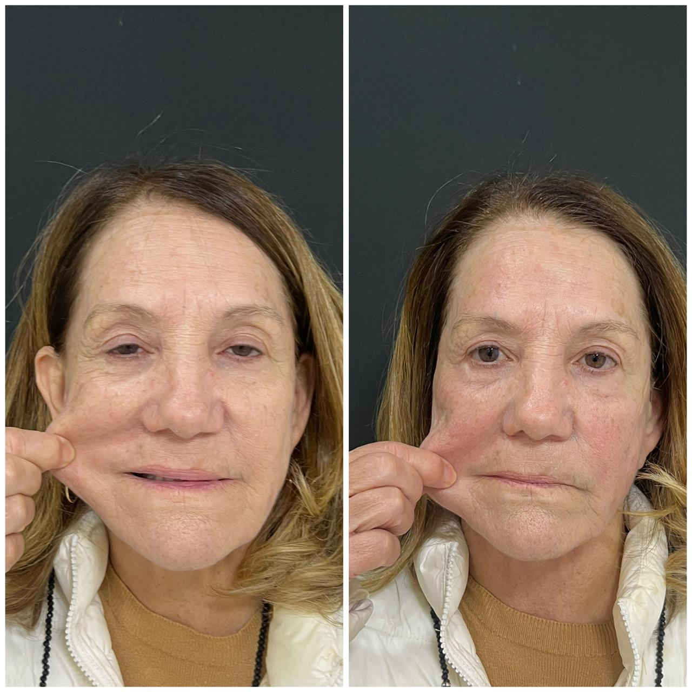

"Tenho medo de que doa"
Muitos tratamentos para flacidez têm fama de ser desconfortáveis. É um medo legítimo, e que o Coolfase™ foi desenvolvido exatamente para eliminar.
Coolfase™ — Curitiba
O Coolfase™ é a radiofrequência monopolar com tecnologia de resfriamento patenteada que transforma a sua pele de forma segura, confortável e com resultado visível já na primeira sessão.
Você se identifica?
Os receios são comuns, e completamente válidos. Mas existe um caminho muito mais confortável do que você imagina.
Muitos tratamentos para flacidez têm fama de ser desconfortáveis. É um medo legítimo, e que o Coolfase™ foi desenvolvido exatamente para eliminar.
Trabalho, compromissos, rotina cheia. A ideia de ficar dias sem aparecer em público trava qualquer decisão. Você precisa de um tratamento que respeite o seu ritmo.
Você sente que a pele perdeu firmeza e elasticidade, mas não quer um resultado exagerado. Quer parecer você mesma — só com uma versão mais descansada e renovada.
A tecnologia
A radiofrequência monopolar do Coolfase™ entrega energia em diferentes camadas da pele para remodelar fibras de colágeno e estimular a produção de colágeno novo — devolvendo firmeza, espessura e elasticidade de dentro para fora.
O diferencial está na tecnologia patenteada DCC™: um sistema de micro refrigeração direto na ponteira que mantém a temperatura em até 5°C durante toda a aplicação, tornando o procedimento surpreendentemente confortável.

Radiofrequência monopolar + DCC
Entrega energia em múltiplas camadas da pele, remodelando o colágeno existente e estimulando a formação de colágeno novo onde a flacidez começa.
Sistema de micro refrigeração patenteado que mantém a ponteira a até 5°C durante toda a aplicação. Resultado: praticamente sem dor, com máxima segurança.
Conta com a maior entrega de potência aprovada pelos órgãos fiscalizadores coreanos — mais eficiência em menos tempo, com resultado visível já na primeira sessão.
O que você ganha
O colágeno remodelado devolve estrutura e sustentação ao rosto, visível já nas primeiras semanas após o procedimento.
A tecnologia DCC™ resfria a ponteira durante toda a aplicação. Muitas pacientes relatam não sentir nenhum desconforto.
Além de firmar, o Coolfase™ aumenta a espessura da pele — ela fica mais densa, mais saudável e com melhor textura.
Remodelação gradual e natural do contorno do rosto, sem mudança brusca — você melhora sem deixar de ser você.
Sai do consultório e segue a sua rotina normalmente. Sem marcas, sem período de recuperação, sem afastamento do trabalho.
O Coolfase™ se complementa com laser e HIFU, tratando diferentes camadas da pele sem competir — só somar resultados.
A avaliação médica é o primeiro passo.
Quero agendar minha avaliaçãoIndicação
Resultados


Quem cuida de você
Escolher um dermatologista é escolher quem vai cuidar de uma das coisas mais importantes que você tem: sua pele. Essa decisão merece atenção.
Médica formada desde 2008, com residência em Dermatologia no Hospital de Clínicas do Paraná, uma das mais respeitadas do Brasil.
O Coolfase™ é um equipamento de uso exclusivo médico — você tem a segurança de que o procedimento será realizado por uma profissional habilitada e especialista.
Proponho somente o que realmente faz sentido para o seu caso. Se o Coolfase™ não for a melhor indicação para você, eu vou te dizer.
O que dizem os pacientes
Hoje venho com gratidão e felicidade, agradecer a Dra Mariana, poucos dias de tratamento em meu caso e já vejo quase 100% de melhora. Todos deveriam ter a oportunidade de desfrutar desse excelente trabalho! Parabéns Dra 💗
A Dra Mariana é uma excelente profissional. Muito atenciosa e na consulta demonstrou carinho e cuidado comigo. Tirou todas as minhas dúvidas sobre o tratamento que iniciei com ela. Estou muito feliz e agradecida.
Consulta acolhedora, atenciosa e que transmite muita segurança! Tenho gostado muito de todo o acompanhamento da Dra Mariana, além do atendimento das meninas que fazem os agendamentos e recepção. Recomendo!!
A Dra. Mariana foi muito querida e atenciosa em toda a consulta, me senti muito bem cuidada e ouvida, fiquei muito feliz em ter encontrado a Dra., foi a melhor consulta com dermato que já fui :)
Dúvidas frequentes
A aplicação é extremamente confortável. A tecnologia DCC™ resfria a ponteira a até 5°C durante todo o procedimento, e muitos pacientes relatam não sentir nenhum desconforto durante os disparos.
Não. O Coolfase™ não tem interrupções na rotina. Você realiza o procedimento e volta à sua rotina normalmente no mesmo dia — sem marcas, sem inchaço significativo, sem nenhuma restrição.
Muitas pacientes percebem melhora na textura e na firmeza logo após a primeira sessão. O resultado continua evoluindo nas semanas e meses seguintes, à medida que o colágeno novo se forma.
Sim, e essa é uma das grandes vantagens. O Coolfase™ potencializa os efeitos de lasers e de HIFUs, tratando diferentes camadas da pele de forma complementar. Eles não competem: se ajudam para um resultado ainda melhor.
O protocolo é avaliado individualmente durante a consulta. Em muitos casos, já é possível ver resultado expressivo com poucas sessões, dependendo das características da pele e dos objetivos de cada paciente.
O Coolfase™ trata rosto e corpo. No rosto, atua na firmeza, contorno, textura, poros e rugas finas. A indicação exata para cada área é definida durante a avaliação.
Localização
CRM-PR 26128 · RQE 2849
Ver rota no mapaAgende sua avaliação
Agende sua avaliação comigo e descubra se o Coolfase™ é o tratamento para você.